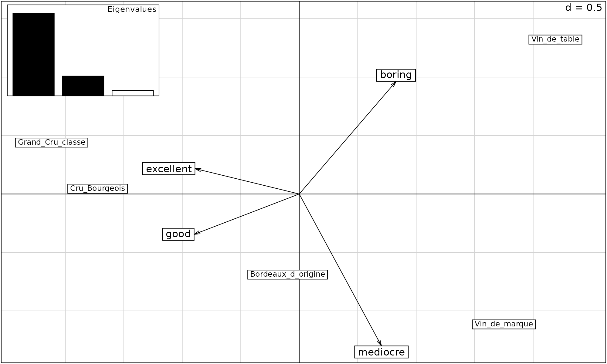
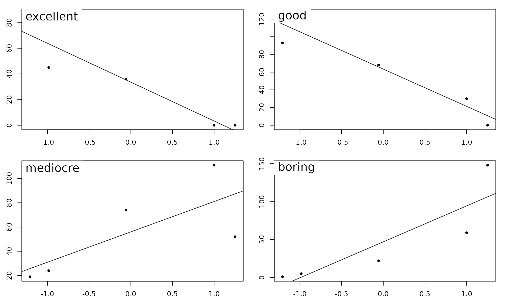

A short PCA vignette - Wine Example
Aedin Culhane
May 1, 2021
Source:vignettes/a_Intro.Rmd
a_Intro.RmdIntroduction
Principal component analysis (PCA) provides a method for visualizing the distinguishing patterns or information in a dataset. Additional tutorials will provide a more in-depth review of the method, this is just a short and sweet “taster” vignette.
Dataset: Winetasting in Bordeaux
We will use a very simple example dataset of wine-tasting where 200 judges performed a blind tasting of 5 red wines from Bordeaux, scoring each as boring, mediocre, good or excellent.
The dataset is available in the ade4 R package:
data(bordeaux)In French wines, table wine has fewer legal restrictions and is cheaper, whereas Cru and Grand Cru wine have more regulation standards and therefore are more expensive.

Figure 1: The bordeaux dataset provides scores from 200 judges in a blind tasting of five different types of red wine from the Bordeaux region of south western parts of France. The judges scored wines as excellent, good, mediocre and boring.
We can see the data as a cross table, or a tibble
data(bordeaux)
bordeaux## excellent good mediocre boring
## Cru_Bourgeois 45 126 24 5
## Grand_Cru_classe 87 93 19 1
## Vin_de_table 0 0 52 148
## Bordeaux_d_origine 36 68 74 22
## Vin_de_marque 0 30 111 59
df<-bordeaux %>%
tibble::rownames_to_column(var="Wine") %>%
reshape2::melt(.,variable.name="Judge_Score",
value.name="Number")
df## Wine Judge_Score Number
## 1 Cru_Bourgeois excellent 45
## 2 Grand_Cru_classe excellent 87
## 3 Vin_de_table excellent 0
## 4 Bordeaux_d_origine excellent 36
## 5 Vin_de_marque excellent 0
## 6 Cru_Bourgeois good 126
## 7 Grand_Cru_classe good 93
## 8 Vin_de_table good 0
## 9 Bordeaux_d_origine good 68
## 10 Vin_de_marque good 30
## 11 Cru_Bourgeois mediocre 24
## 12 Grand_Cru_classe mediocre 19
## 13 Vin_de_table mediocre 52
## 14 Bordeaux_d_origine mediocre 74
## 15 Vin_de_marque mediocre 111
## 16 Cru_Bourgeois boring 5
## 17 Grand_Cru_classe boring 1
## 18 Vin_de_table boring 148
## 19 Bordeaux_d_origine boring 22
## 20 Vin_de_marque boring 59Data visualization is important and always a good first step with any dataset, even simple ones. We visualize this data, with a simple barplot, to see the distribution of excellent, good, mediocre and boring scores for each wine. The Grand Cru Classe recieved more “excellent” scores than the Vin_de_table (table wine).
#devtools::install_github("gadenbuie/ggpomological")
#install.packages("magick")
p<- ggplot(df,
aes(Judge_Score, Number, fill=Judge_Score))+
geom_bar(color="black",stat = "identity") +
facet_wrap(~Wine, nrow = 2)+
scale_fill_pomological()+
theme_pomological("Homemade Apple", 12)+
theme(axis.text.x=element_blank(),
legend.position = "bottom",
legend.key = element_rect(colour = "black"))
paint_pomological(p,res = 110) %>%
magick::image_write("barplot-painted.png")
Figure: Visualizing the bordeaux dataset using ggplot and ggtheme pomological
To make it visually interesting we used the ggpomological graphics ggtheme, to display these wine data. The pomology ggtheme and palette evokes the style and colors of old watercolor prints of pomology; a branch of botany that studies and cultivates fruit ggpomological.
Running PCA
We will show two quick approaches to run PCA as seen in Figure 3.

Figure 3: Overview of a PCA of bordeaux dataset
- We will scale the data with
center=TRUE, scale=TRUE,
## excellent good mediocre boring
## Cru_Bourgeois 0.3148138 1.2550661 -0.8434205 -0.6893123
## Grand_Cru_classe 1.4746543 0.5934498 -0.9752049 -0.7549611
## Vin_de_table -0.9278724 -1.2711053 -0.1054276 1.6576321
## Bordeaux_d_origine 0.0662766 0.0922253 0.4744240 -0.4103050
## Vin_de_marque -0.9278724 -0.6696359 1.4496290 0.1969464and apply singular value decomposition (SVD) to the z-score scaled data. This will generates 3 matrices, U, D, V.
## List of 3
## $ d: num [1:4] 3.50 1.71 9.00e-01 5.36e-17
## $ u: num [1:5, 1:4] -0.4404 -0.5408 0.5595 -0.0253 0.4471 ...
## $ v: num [1:4, 1:4] -0.535 -0.539 0.422 0.496 0.13 ...where \[X = U D V'\]
## [,1] [,2] [,3] [,4]
## [1,] 0.3148138 1.2550661 -0.8434205 -0.6893123
## [2,] 1.4746543 0.5934498 -0.9752049 -0.7549611
## [3,] -0.9278724 -1.2711053 -0.1054276 1.6576321
## [4,] 0.0662766 0.0922253 0.4744240 -0.4103050
## [5,] -0.9278724 -0.6696359 1.4496290 0.1969464D is a diagonal matrix, with the singular values.
U and V contain the left and right singular vectors, which allows us to extract the scores of the rows and columns in the reduced space. The diagonal matrix \[diag(s$d)\] contains the singular values.
diag(s$d)## [,1] [,2] [,3] [,4]
## [1,] 3.50159 0.000000 0.0000000 0.000000e+00
## [2,] 0.00000 1.711166 0.0000000 0.000000e+00
## [3,] 0.00000 0.000000 0.9004307 0.000000e+00
## [4,] 0.00000 0.000000 0.0000000 5.364347e-17The singular values s$d are square roots of eigenvalues which tell how much variance is captured by each component.
## [1] 76.63 18.30 5.07 0.00The first component (PC1, horizontal) captured almost 77% of the variance or information in the data, and shows that boring/medicore wines were distinct from good/excellent, with Vin de table (Table Wine) and Vin de marque (Brand Wine) associated with the former descriptions. Regional Bordeaux wine (Bordeaux d’origine) was close to the origin, with Cru and Grand Cru wines associated with good/excellent terms
The second component represented 18% of the variance, and mostly distinguished boring from medicore wine. There was little distinction between good and excellent on PC 2.
- We can perform the same calculation by as calling a PCA function, for example if we call PCA is the R package
ade4.
## Class: pca dudi
## Call: dudi.pca(df = bordeaux, scannf = FALSE)
##
## Total inertia: 4
##
## Eigenvalues:
## Ax1 Ax2 Ax3
## 3.0653 0.7320 0.2027
##
## Projected inertia (%):
## Ax1 Ax2 Ax3
## 76.632 18.301 5.067
##
## Cumulative projected inertia (%):
## Ax1 Ax1:2 Ax1:3
## 76.63 94.93 100.00The first component (horizontal), which captures most of the information in the dataset, distinguished Vin de table and Vin de marque from the other wines. Whilst Vin de table and Vin de marque were associated with the scores “boring” and “mediocre”. The Grand Cru and Cru wines were “excellent” and “good”
scatter( bordeaux.pca)
We can see the relationship between each variable and the first component, by plotting the score of the first component against the orginal data.
score(bordeaux.pca)
# plot(bordeaux.pca$l1[,1], bordeaux$excellent)We will learn more about the relationship between SVD and PCA, the different R packages that run PCA, in the second vignette Principal Component Analysis in R. We will apply PCA to genomics data in the 4th vignette of the workshop; PCA example: scRNAseq.
A few resources for visualization of Results; Explor, pcaExplorer
Explor
Julien Barnier’s package explor provides a nice shiny interface to explore matrix factorization results including PCA, Correspondence analysis, or Multiple correspondence analysis and other dimension reduction methods available in R packages ade4, vegan, FactoMineR, GDATools, MASS, stats (prcomp or princomp)

Explor
pcaExplorer
Federico Marini and Harald Binder have create a Bioconductor package called pcaExplorer

PCA of bordeaux dataset
## R version 4.1.0 (2021-05-18)
## Platform: x86_64-pc-linux-gnu (64-bit)
## Running under: Ubuntu 20.04.2 LTS
##
## Matrix products: default
## BLAS/LAPACK: /usr/lib/x86_64-linux-gnu/openblas-pthread/libopenblasp-r0.3.8.so
##
## locale:
## [1] LC_CTYPE=en_US.UTF-8 LC_NUMERIC=C
## [3] LC_TIME=en_US.UTF-8 LC_COLLATE=en_US.UTF-8
## [5] LC_MONETARY=en_US.UTF-8 LC_MESSAGES=C
## [7] LC_PAPER=en_US.UTF-8 LC_NAME=C
## [9] LC_ADDRESS=C LC_TELEPHONE=C
## [11] LC_MEASUREMENT=en_US.UTF-8 LC_IDENTIFICATION=C
##
## attached base packages:
## [1] stats graphics grDevices utils datasets methods base
##
## other attached packages:
## [1] reshape2_1.4.4 tibble_3.1.3 ade4_1.7-17 explor_0.3.9 ggplot2_3.3.5
## [6] dplyr_1.0.7 knitr_1.33
##
## loaded via a namespace (and not attached):
## [1] Rcpp_1.0.7 tidyr_1.1.3 assertthat_0.2.1 rprojroot_2.0.2
## [5] digest_0.6.27 utf8_1.2.2 mime_0.11 plyr_1.8.6
## [9] R6_2.5.0 ellipse_0.4.2 evaluate_0.14 highr_0.9
## [13] pillar_1.6.2 rlang_0.4.11 jquerylib_0.1.4 rmarkdown_2.9
## [17] pkgdown_1.6.1 textshaping_0.3.5 desc_1.3.0 stringr_1.4.0
## [21] htmlwidgets_1.5.3 munsell_0.5.0 shiny_1.6.0 compiler_4.1.0
## [25] httpuv_1.6.1 xfun_0.24 pkgconfig_2.0.3 systemfonts_1.0.2
## [29] htmltools_0.5.1.1 tidyselect_1.1.1 fansi_0.5.0 crayon_1.4.1
## [33] withr_2.4.2 later_1.2.0 MASS_7.3-54 grid_4.1.0
## [37] jsonlite_1.7.2 xtable_1.8-4 gtable_0.3.0 lifecycle_1.0.0
## [41] DBI_1.1.1 magrittr_2.0.1 formatR_1.11 scales_1.1.1
## [45] stringi_1.7.3 cachem_1.0.5 fs_1.5.0 promises_1.2.0.1
## [49] bslib_0.2.5.1 ellipsis_0.3.2 ragg_1.1.3 generics_0.1.0
## [53] vctrs_0.3.8 scatterD3_1.0.0 RColorBrewer_1.1-2 tools_4.1.0
## [57] glue_1.4.2 purrr_0.3.4 fastmap_1.1.0 yaml_2.2.1
## [61] colorspace_2.0-2 memoise_2.0.0 sass_0.4.0